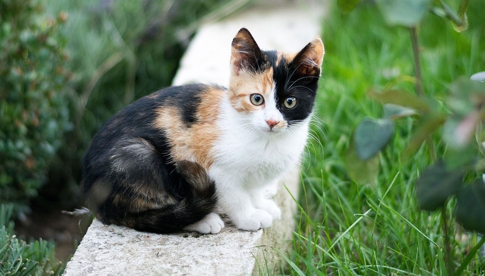

Katzen sind Fleischfresser und benötigen eine proteinreiche Ernährung mit wichtigen Nährstoffen wie Taurin, Arachidonsäure und Vitamin A.
Katzen nehmen ihre Nahrung mit der Zunge und den Zähnen auf. Ihr Gebiss dient zum Zerreißen und Festhalten der Beute.
Der Magensaft enthält Enzyme und Salzsäure, die die Nahrung aufspalten.
Hauptort der Verdauung
Aufnahme von Nährstoffen und Vitaminen
Hier wird Wasser entzogen und die restlichen Nährstoffe verarbeitet.